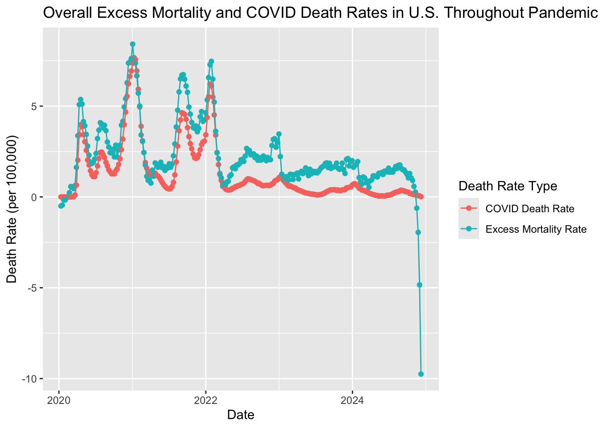
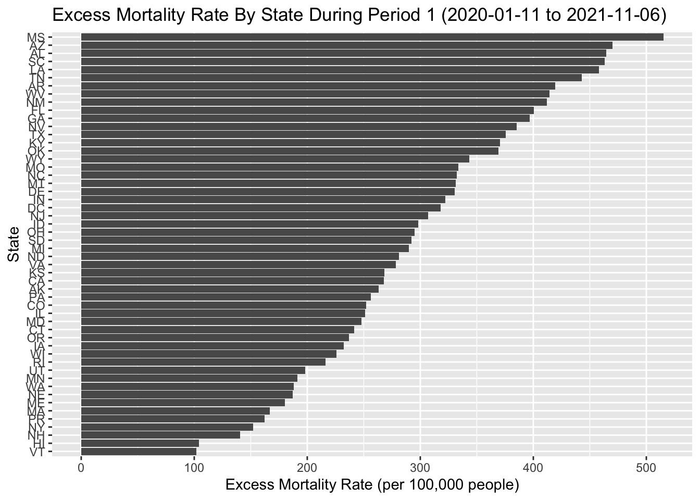
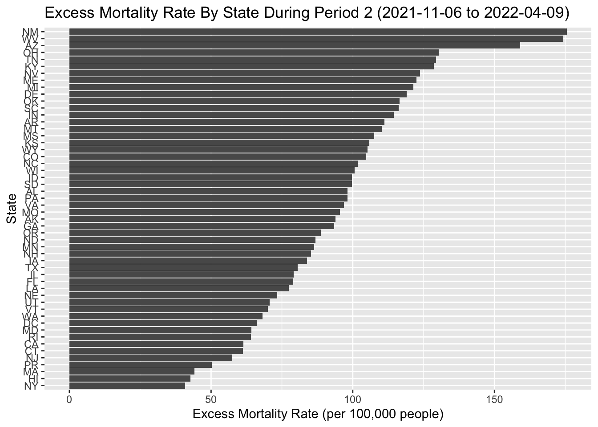
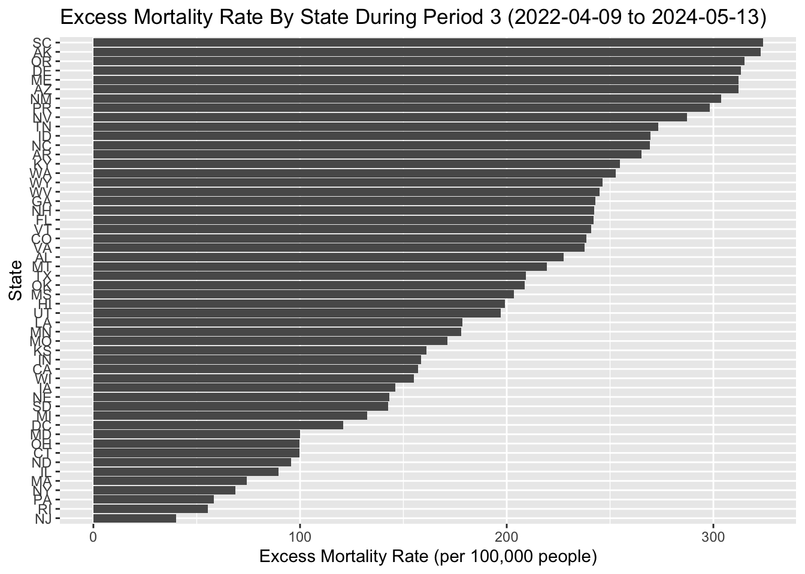

library(tidyverse)
library(plotly)
# load data
covid <- read_csv("../data/covid_cases_deaths.csv")COVID-19 Pandemic Impact
Abstract
TODO
Introduction
TODO
Methods
Data Preparation
To prepare and wrangle the data for this analysis, we integrated multiple datasets, cleaned the data, and structured it for consistency and analysis. The key steps are detailed below:
1. Population Data Wrangling
We processed population data for U.S. states from two datasets: population estimates from 2020 to 2023 and 2024 projections. These datasets were merged into a single dataset.
The states with missing population data for 2024 was filled using its corresponding 2023 population.
State names were converted to standardized abbreviations for consistency, and non-U.S. states (e.g., territories) were excluded.
The population data was pivoted into a long format, where each row represents a state-year combination with the corresponding population value.
2. COVID-19 Death Data Wrangling
The COVID-19 death dataset was filtered to include only weekly data for consistency.
Relevant columns, including weekly start and end dates, state, COVID-19 deaths, total deaths, and percentage of expected deaths, were renamed and standardized.
Dates were converted into a standard date format, and year and week numbers were extracted.
State names were standardized to abbreviations, and data was filtered to include only states present in the population dataset.
The cleaned dataset includes weekly COVID-19 death counts and related information for each state.
3. Combining Death and Population Data
- The cleaned COVID-19 death data was merged with the population dataset by state and year to ensure each record included population data, allowing the calculation of rates (e.g., death rates per 100,000 people).
4. COVID-19 Cases Data Wrangling
The COVID-19 cases dataset was cleaned and standardized. Weekly case numbers, end dates, and state abbreviations were extracted and converted into the same structure as the death data.
Only states present in the population dataset were included.
The processed dataset contains weekly case counts for each state.
5. Final Dataset Integration
The cleaned COVID-19 death, population, and case datasets were integrated into a single dataset by merging them on state, year, and week.
Population data was forward and backward filled to ensure completeness for all records.
Additional columns, such as epidemiological week (
epiweek) and year, were calculated for consistency with standard reporting practices.
6. Final Dataset Output
The final dataset contains the following variables: state, date, epidemiological week, COVID-19 deaths, total deaths, population, and cases. This dataset provides a comprehensive, time-resolved view of COVID-19 impacts across U.S. states.
The processed dataset was exported as a CSV file for subsequent analysis.
1) Divide the pandemic period into waves
Divide the pandemic period, January 2020 to December 2024 into waves. Justify your choice with data visualization.
We first computed the following:
COVID-19 death rate per 100,000 people
Total death rate per 100,000 people (for the following questions)
Case fatality rate (%) (for the following questions)
covid_overall <- covid|>
group_by(year, week)|>
summarise(covid_death = sum(covid_death, na.rm = TRUE),
total_death = sum(total_death, na.rm = TRUE),
population = sum(population),
cases_total = sum(cases, na.rm = TRUE),
date = first(date),
.groups = 'drop')|>
mutate(covid_death_rate_100k = (covid_death / population) * 1e5,
total_death_rate_100k = (total_death / population) * 1e5,
case_fatality_rate = (covid_death/cases_total)*100)
base_plot <- covid_overall|>
ggplot(aes(x = date,))+
labs(x = "Date")1.1 COVID-19 Death Rate Trend (2020-2024)
We then made two plots to observe the trends of COVID-19 death rate from 2020 to 2024 and COVID-19 cases from 2020 to 2023.
y_map_death <- aes(y = covid_death_rate_100k)
death_rate_plot <- base_plot +
geom_point(mapping = y_map_death) +
geom_line(mapping = y_map_death, color = "red") +
ylab("COVID Death Rate Per 100K")
ggplotly(death_rate_plot)1.2 COVID-19 Case Trend (2020-2023)
y_map_cases <- aes(y = cases_total)
cases_plot <- base_plot +
geom_point(mapping = y_map_cases) +
geom_line(mapping = y_map_cases, color = "red") +
ylab("Total COVID Cases")
ggplotly(cases_plot)1.3 Define Periods
After analyzing the trends in COVID-19 death rates and case counts, we decided to divide the pandemic period into three waves based on the number of COVID-19 cases. This approach was chosen because it better reflects the overall spread of the virus. For instance, the virus might have been spreading widely among younger populations, who are less likely to experience severe outcomes or fatalities. By focusing on case counts rather than death tolls, we aim to capture the dynamics of viral transmission during the pandemic.
Period 1: 2020-01-11 to 2021-11-06
Period 2: 2021-11-06 to 2022-04-09
Period 3: 2022-04-09 to 2024-05-13
covid_period_1 <- covid|>
filter(date >= "2020-01-11" & date < "2021-11-06")
covid_period_2 <- covid|>
filter(date >= "2021-11-06" & date < "2022-04-09")
covid_period_3 <- covid|>
filter(date >= "2022-04-09" & date <= "2024-05-13")2) COVID 19 Death Rates by State
For each period, compute the death rates by state. Describe which states did better or worse during the different periods.
2.1 Period 1: 2020-01-11 to 2021-11-06
2.1.1 State-Level COVID-19 Death Rate
p2.1.1 <-covid_period_1|>
mutate(covid_death_rate_100k = (covid_death / population)*1e5)|>
ggplot(aes(x=date, y=covid_death_rate_100k, color= state))+
geom_point()+
geom_line()+
labs(title = "State-Level COVID-19 Death Rate (2020-01-11 to 2021-11-06)",
x = "Date",
y = "Death Rate (per 100k People)")
ggplotly(p2.1.1)2.1.2 State-Level Cumulative COVID-19 Death Rates
p2.1.2 <- covid_period_1 |>
group_by(state) |>
summarise(covid_death = sum(covid_death, na.rm = TRUE),
population = first(population),
death_rate_per_100k = (covid_death /population)*1e5,
.groups = 'drop')|>
ggplot(aes(x=reorder(state, death_rate_per_100k), y=death_rate_per_100k))+
geom_bar(stat = 'identity', fill = 'lightblue')+
coord_flip()+
labs(title = "State-Level Cumulative COVID-19 Death Rates (2020-01-11 to 2021-11-06)",
x = "State",
y = "Death Rate (per 100k people)")
ggplotly(p2.1.2)Observation:
During Period 1, Tennessee (TN) had the greatest COVID-19 death rate when Vermont (VT) had the lowest.
2.2 Period 2: 2021-11-06 to 2022-04-09
2.2.1 State-Level COVID-19 Death Rate
p2.2.1 <-covid_period_2|>
mutate(covid_death_rate_100k = (covid_death / population)*1e5)|>
ggplot(aes(x=date, y=covid_death_rate_100k, color= state))+
geom_point()+
geom_line()+
labs(title = "State-Level COVID-19 Death Rate (2021-11-06 to 2022-04-09)",
x = "Date",
y = "Death Rate (per 100k People)")
ggplotly(p2.2.1)2.2.2 State-Level Cumulative COVID-19 Death Rates
p2.2.2 <- covid_period_2 |>
group_by(state) |>
summarise(covid_death = sum(covid_death, na.rm = TRUE),
population = first(population),
death_rate_per_100k = (covid_death /population)*1e5,
.groups = 'drop')|>
ggplot(aes(x=reorder(state, death_rate_per_100k), y=death_rate_per_100k))+
geom_bar(stat = 'identity', fill = 'lightblue')+
coord_flip()+
labs(title = "State-Level Cumulative COVID-19 Death Rates (2021-11-06 to 2022-04-09)",
x = "State",
y = "Death Rate (per 100k people)")
ggplotly(p2.2.2)Observation:
During Period 2, West Virginia (WV) had the greatest COVID-19 death rate when Hawaii (HI) had the lowest.
2.3 Period 3: 2022-04-09 to 2024-05-13
2.3.1 State-Level COVID-19 Death Rate
p2.3.1 <-covid_period_3|>
mutate(covid_death_rate_100k = (covid_death / population)*1e5)|>
ggplot(aes(x=date, y=covid_death_rate_100k, color= state))+
geom_point()+
geom_line()+
labs(title = "State-Level COVID-19 Death Rate (2022-04-09 to 2024-05-13)",
x = "Date",
y = "Death Rate (per 100k People)")
ggplotly(p2.3.1)2.3.2 State-Level Cumulative COVID-19 Death Rates
p2.3.2 <- covid_period_3 |>
group_by(state) |>
summarise(covid_death = sum(covid_death, na.rm = TRUE),
population = first(population),
death_rate_per_100k = (covid_death /population)*1e5,
.groups = 'drop')|>
ggplot(aes(x=reorder(state, death_rate_per_100k), y=death_rate_per_100k))+
geom_bar(stat = 'identity', fill = 'lightblue')+
coord_flip()+
labs(title = "State-Level Cumulative COVID-19 Death Rates (2022-04-09 to 2024-05-13)",
x = "State",
y = "Death Rate (per 100k people)")
ggplotly(p2.3.2)Observation:
During Period 3, Kentucky (KY) had the greatest COVID-19 death rate when Alaska (AK) had the lowest.
3) COVID 19 Trend
Describe if COVID-19 became less or more virulent across the different periods.
3.1 Period 1: 2020-01-11 to 2021-11-06
3.1.1 National COVID-19 Case Fatality Rate
p3.1.1 <- covid_period_1|>
group_by(date)|>
summarise(covid_death = sum(covid_death, na.rm = TRUE),
cases_total = sum(cases, na.rm = TRUE),
.groups = 'drop')|>
mutate(case_fatality_rate = (covid_death/cases_total)*100)|>
ggplot(aes(x=date, y=case_fatality_rate))+
geom_point()+
geom_line()+
labs(title = "National COVID-19 Case Fatality Rate (2020-01-11 to 2021-11-06)",
x = "Date",
y = "Case Fatality Rate (%)")
ggplotly(p3.1.1)Observation:
During Period 1, the COVID-19 fatality rate exhibited a sharp increase from February 29, 2020, to March 7, 2020, peaking at 20.79%. Following this peak, the fatality rate declined significantly to 2.59% and eventually to 0.77% towards the end of this period.
The trend during this period showed that COVID-19 became less virulent over time. However, the sharp rise and fall during Period 1 indicate that early in the pandemic, the virus was particularly lethal, possibly due to a lack of understanding of effective treatments and overwhelmed healthcare systems.
Notably, according to Plot 3.1.2, Florida (FL) recorded the highest COVID-19 fatality rate (77.27%) among all states.
3.1.2 State-Level COVID-19 Case Fatality Rates
p3.1.2 <- covid_period_1|>
mutate(case_fatality_rate = (covid_death/cases)*100)|>
ggplot(aes(x=date, y=case_fatality_rate, color=state))+
geom_point()+
geom_line()+
labs(title = "State-Level COVID-19 Case Fatality Rates (2020-01-11 to 2021-11-06)",
x = "Date",
y = "Case Fatality Rate (%)")
ggplotly(p3.1.2)3.2 Period 2: 2021-11-06 to 2022-04-09
3.2.1 National COVID-19 Case Fatality Rate
p3.2.1 <- covid_period_2|>
group_by(date)|>
summarise(covid_death = sum(covid_death, na.rm = TRUE),
cases_total = sum(cases, na.rm = TRUE),
.groups = 'drop')|>
mutate(case_fatality_rate = (covid_death/cases_total)*100)|>
ggplot(aes(x=date, y=case_fatality_rate))+
geom_point()+
geom_line()+
labs(title = "National COVID-19 Case Fatality Rate (2021-11-06 to 2022-04-09)",
x = "Date",
y = "Case Fatality Rate (%)")
ggplotly(p3.2.1)Observation:
During Period 2, the COVID-19 fatality rate exhibited an unstable trend, initially decreasing, followed by an increase, and then another decrease. The highest fatality rate during this period was 1.68%, and the lowest was 0.38%, both significantly lower than the corresponding highest and lowest rates in Period 1.
The fatality rate experienced two major decreases and one major increase during this period. The first decrease occurred between November 6, 2021, and January 15, 2022, while the second decrease was observed between March 12, 2022, and April 9, 2022. The major increase took place between January 15, 2022, and March 12, 2022.
Notably, according to Plot 3.2.2, Kansas (KS) recorded the highest COVID-19 fatality rate (7.02%) among all states.
3.2.2 State-Level COVID-19 Case Fatality Rates
p3.2.2 <- covid_period_2|>
mutate(case_fatality_rate = (covid_death/cases)*100)|>
ggplot(aes(x=date, y=case_fatality_rate, color=state))+
geom_point()+
geom_line()+
labs(title = "State-Level COVID-19 Case Fatality Rates (2021-11-06 to 2022-04-09)",
x = "Date",
y = "Case Fatality Rate (%)")
ggplotly(p3.2.2)3.3 Period 3: 2022-04-09 to 2024-05-13
3.3.1 National COVID-19 Case Fatality Rate
p3.3.1 <- covid_period_3|>
group_by(date)|>
summarise(covid_death = sum(covid_death, na.rm = TRUE),
cases_total = sum(cases, na.rm = TRUE),
.groups = 'drop')|>
mutate(case_fatality_rate = (covid_death/cases_total)*100)|>
ggplot(aes(x=date, y=case_fatality_rate))+
geom_point()+
geom_line()+
labs(title = "National COVID-19 Case Fatality Rate (2022-04-09 to 2024-05-13)",
x = "Date",
y = "Case Fatality Rate (%)")
ggplotly(p3.3.1)Observation:
During Period 3, the COVID-19 fatality rate initially exhibited a sharp decrease and followed by a gradual increase. The decline occurred between April 9, 2022 and May 21, 2022, and the increase then followed. The highest fatality rate during this period was 1.07%, and the lowest was 0.25%, both significantly lower than the corresponding highest and lowest rates in Period 1 and slighly lower than the ones in Period 3.
Notably, according to Plot 3.1.2, Kentucky (KY) recorded the highest COVID-19 fatality rate (8.58%) among all states.
3.3.2 State-Level COVID-19 Case Fatality Rates
p3.3.2 <- covid_period_3|>
mutate(case_fatality_rate = (covid_death/cases)*100)|>
ggplot(aes(x=date, y=case_fatality_rate, color=state))+
geom_point()+
geom_line()+
labs(title = "State-Level COVID-19 Case Fatality Rates (2022-04-09 to 2024-05-13)",
x = "Date",
y = "Case Fatality Rate (%)")
ggplotly(p3.3.2)Question 4
For those working in groups: Estimate excess mortality for each week for each state. Do COVID-19 deaths explain the excess mortality?
From: https://data.cdc.gov/NCHS/Provisional-COVID-19-Death-Counts-by-Week-Ending-D/r8kw-7aab/about_data
“Percent of expected deaths is the number of weekly deaths for all causes compared to the average number across the same week in 2017–2019.”
From: https://www.cdc.gov/nchs/nvss/vsrr/covid19/index.htm
“Percent of expected deaths provided in this release are shown to provide context for interpreting provisional counts of COVID-19 deaths and deaths due to related causes. Where estimated values are high (e.g., greater than 100%), this suggests that mortality is higher in 2020-2023 relative to the same weeks of prior years. Where estimated values of completeness are low, this could indicate that data are incomplete due to delayed reporting, or that mortality is lower in 2020-2023 compared with prior years, or some combination of these factors.”
In other words, if percentage_expected_death > 100, mortality is higher now (2020-2023) than it was in prior years. Where percentage_expected_death < 100, mortality is lower now (2020-2023) than it was in prior years.
\[ \text{percentage_expected_death} = \frac{\text{total_death_2020_to_2024}}{\text{total_death_2017_to_2019} \times 100 \]
Since we are comparing across states, states with larger populations will have larger excess mortalities. Therefore, we compute mortality rates (per 100,000) to allow for comparison between states.
# compute excess mortality
covid_exp_deaths <- covid |>
# compute expected deaths
mutate(prop_exp_death = percentage_expected_death / 100) |>
mutate(exp_death = total_death / prop_exp_death) |>
# compute excess mortality
# need to use rates since mortality will depend on population
mutate(
total_death_rate = total_death / population * 1e5,
exp_death_rate = exp_death / population * 1e5
) |>
mutate(exc_mort_rate = total_death_rate - exp_death_rate)
# plot excess mortality
# for simplicity of viewing, will collapse to total excess mortality over all US
covid_exp_deaths |>
select(state, date, covid_death, total_death, exp_death, population) |>
group_by(date) |>
summarize(
covid_death = sum(covid_death, na.rm=T),
total_death = sum(total_death, na.rm=T),
exp_death = sum(exp_death, na.rm=T),
population = sum(population, na.rm=T) # since we are collapsing across states, sum population of each state to get total US pop
) |>
ungroup() |>
mutate(
total_death_rate = total_death / population * 1e5,
exp_death_rate = exp_death / population * 1e5,
covid_death_rate = covid_death / population * 1e5
) |>
mutate(exc_mort_rate = total_death_rate - exp_death_rate) |>
select(date, covid_death_rate, exc_mort_rate) |>
pivot_longer(cols = c("covid_death_rate", "exc_mort_rate"), names_to = "death_type", values_to = "num_deaths") |>
mutate(death_type = case_when(
death_type == "covid_death_rate" ~ "COVID Death Rate",
death_type == "exc_mort_rate" ~ "Excess Mortality Rate"
)) |>
ggplot(aes(
x = date,
y = num_deaths,
color = death_type
)) + geom_point() + geom_line() +
labs(
x = "Date",
y = "Death Rate (per 100,000)",
color = "Death Rate Type",
title = "Overall Excess Mortality and COVID Death Rates in U.S. Throughout Pandemic"
)
Looking at the plot, the excess mortality rate is pretty consistently higher than the COVID deaths. This suggests that COVID-19 deaths do not explain the excess mortality.
Potential TODO items:
- Perhaps the method you used to calculate excess deaths is incorrect. Perhaps you should get actual death data for the previous years and compute the expected deaths yourself using linear regression, like in the problem set. This would let you account for biases like demographic changes, that could affect mortality.
Question 5
For those working in groups: Repeat 2 but for excess mortality instead of COVID-19 deaths.
I.e. For each period compute the excess mortality by state. Describe which states did better or worse during the different periods.
Will aggregate across all dates for easy visualization.
covid_pers <- list(
per1 = list(
start = make_date(2020, 1, 11),
end = make_date(2021, 11, 6)
),
per2 = list(
start = make_date(2021, 11, 6),
end = make_date(2022, 4, 9)
),
per3 = list(
start = make_date(2022, 4, 9),
end = make_date(2024, 5, 13)
)
)
# aggregate across all dates
exc_mortality_period <- function(per_start_date, per_end_date) {
output <- covid_exp_deaths |>
filter((date >= per_start_date) & (date < per_end_date)) |>
group_by(state) |>
summarize(
covid_death = sum(covid_death, na.rm=T),
total_death = sum(total_death, na.rm=T),
exp_death = sum(exp_death, na.rm=T),
population = first(population)
) |> ungroup() |>
mutate(
total_death_rate = total_death / population * 1e5,
exp_death_rate = exp_death / population * 1e5,
covid_death_rate = exp_death / population * 1e5
) |>
mutate(exc_mort_rate = total_death_rate - exp_death_rate)
return(output)
}
exc_mort_per_1 <- exc_mortality_period(covid_pers$per1$start, covid_pers$per1$end)
exc_mort_per_1 |> mutate(state = reorder(state, exc_mort_rate)) |>
ggplot(aes(y = state, x = exc_mort_rate)) +
geom_col() + labs(
x = "Excess Mortality Rate (per 100,000 people)",
y = "State",
title = "Excess Mortality Rate By State During Period 1 (2020-01-11 to 2021-11-06)"
)
exc_mort_per_2 <- exc_mortality_period(covid_pers$per2$start, covid_pers$per2$end)
exc_mort_per_2 |> mutate(state = reorder(state, exc_mort_rate)) |>
ggplot(aes(y = state, x = exc_mort_rate)) +
geom_col() + labs(
x = "Excess Mortality Rate (per 100,000 people)",
y = "State",
title = "Excess Mortality Rate By State During Period 2 (2021-11-06 to 2022-04-09)"
)
exc_mort_per_3 <- exc_mortality_period(covid_pers$per3$start, covid_pers$per3$end)
exc_mort_per_3 |> mutate(state = reorder(state, exc_mort_rate)) |>
ggplot(aes(y = state, x = exc_mort_rate)) +
geom_col() + labs(
x = "Excess Mortality Rate (per 100,000 people)",
y = "State",
title = "Excess Mortality Rate By State During Period 3 (2022-04-09 to 2024-05-13)"
)
During period 1, the states that had the highest excess mortality rates were MS, AZ, AL, and SC. The states with the lowest excess mortality rates were VT, HI, NH, and NY.
During period 2, the states that had the highest excess mortality rates were NM, WV, AZ, OH. The states with the lowest excess mortality rates were NY, HI, MA, PR.
During period 3, the states that had the highest excess mortality rates were SC, AK, OR, DE. The states with the lowest excess mortality rates were NJ, RI, PA, NY.
Discussion
We found that during wave 1, Mississippi had the highest cumulative death rate and Vermont had the lowest. Phase 1 went from the start of the pandemic until around the time the Omicron variant of COVID was discovered. Many of the states with high death rates are located in the southeastern region of the United States, whereas many of the states with low death rates are located either in the northern region of the United States or away from the US mainland (i.e. Hawaii, Alaska, Puerto Rico). The states away from the US mainland likely had fewer deaths because fewer people were traveling during that phase. Also, many states in the south likely had less restrictive stay-at-home orders, especially during the later stages of phase 1, resulting in a higher death count.
During the second wave, which was from the time the Omicron variant was discovered until the time when masks became optional, West Virginia had the highest death rate and Hawaii had the lowest. The states with the highest number of deaths are located in various regions of the United States. Hawaii, and Puerto Rico again had relatively low death rates due to low travel. During this phase of the pandemic, there were fewer restrictions than there were in the first phase. For example, many schools held classes in-person or hybrid, and people were staying home less. Additionally, Omicron was a highly transmissible variant of COVID. Therefore, it makes sense that the states with higher and lower death rates would be more scattered and less confined to certain regions.
During the third wave, from when mask mandates lessened until the end of the pandemic, the states with the highest and lowest death rates were again in various locations around the country, likely due to the easing of COVID restrictions and the spread of the virus. However, compared to the other two periods, death rates in this period were lowest overall, most likley because people had been vaccinated or had natural immunity.
We also examined COVID-19 case fatality rates during the three periods to assess whether COVID became more or less virulent during the periods. Case fatality rate appeared to be highest during the first period. At the begining of the period, it was between 5 and 10%, likely due to the fact that the healthcare system was still discovering how to best treat people with COVID. It remained relatively constant from the end of the first period until throughout the second period, with a slight dip at the start of January (which is likely due mainly to random fluctuations in the rate rather than anything significant). Period 3 exhibited a similar trend. The relatively constant trend from the end of period 1 and throughouot periods 2 and 3 may be due to the fact that we were taking measures to isolate people, especially the most vulnerable, so fewer COVID cases led to deaths. Toward the later stages of the pandemic, when the isolation measures ended, we had vaccines and other means to protect the most vulnerable, causing fewer COVID cases to lead to deaths.
Lastly, we examined excess mortality to determine whether COVID-19 deaths explained the excess mortality. Looking at overall excess mortality, we found that it was higher overall than the mortality rate due to COVID deaths, suggesting that COVID deaths do not explain the excess mortality. It is possible that other factors, such as mental health struggles due to stay at home orders may explain the excess mortality.
One limitation with our calculation of excess mortality is we did not have data on factors such as changing population demographics, nor on actual death rates of prior years. We had to rely on the percent excess mortality given in our COVID-19 dataset to calculate expected numbers of deaths. Therefore, we were not able to account for factors such as changing population demographics. We assumed that those who calculated the percentage of expected deaths took factors like these into account, but we do not have a way to verify what factors exactly, nor how thorough they were.